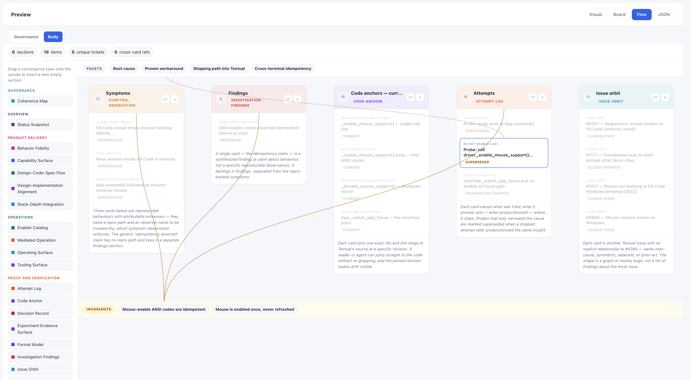

Every time you engage with an open-source issue, you pay an archaeology tax. A living doc is how we made that time collect into something a fresh session can load.
Here is a scene every contributor knows. You want to help with an open-source project. You find an issue that looks important. Before you can write a single line of code, you spend a while reading — the original issue body, the comments, the linked PR that almost-but-not-quite landed, the closed sibling issue from two years ago, the three files in src/ everyone keeps pointing at. By the time you are ready to start engineering, you have paid a tax that did not go anywhere. If you step away for a week, you pay it again. If someone else picks the issue up, they pay it from scratch.
This tax is the thing stopping most people from engaging with open source on anything harder than a docs typo. And AI does not remove it — it amplifies it.
Say you open Textual issue #5380 — a real, still-open issue we used as a trial. The symptoms sound simple: mouse input stops working after a VS Code window reload. But to get your bearings, you need to read:
UKGovernmentBEIS/inspect_ai);src/textual/drivers/linux_driver.py, specifically lines 121–133 and 248;?1000h, ?1003h, ?1015h, ?1006h — and which of them xterm.js actually uses.That is the archaeology. Done well, it is thorough. The shortcuts are where you lose things — you miss that the ANSI codes are idempotent on xterm.js (the only reason the proven fix is safe to ship), or you skim the issue body and jump straight to "I'll just patch line 248", and the whole situation gets worse.
When you hand this issue to Claude Code or Codex, the agent does the same archaeology. It reads the thread. It greps the driver file. It follows the PR references. It maybe misses the inspect_ai commit if you did not paste the URL. Then the session ends, the context window closes, and the next session starts cold. Every time. In tokens instead of minutes, but the work is the same.
People reach for the obvious answers and they all fail in roughly the same way:
The thing missing from every one of these is that the document is not a working surface. It is either a summary written after the fact or a file dump read before the fact. It is not the place the work happens.
What we wanted was a document with three properties. First: it is the end-product of the archaeology, so you do not repeat the work. Second: it is structured enough that a fresh Claude Code or Codex session can load it and know exactly what each piece of content is — a symptom with repro, a revision-pinned code pointer, a shipped workaround, a sibling issue, a maintainer stance. Third: it is meant to be edited live as engineering progresses. Symptoms get confirmed. Attempts get tried and marked shipped or rejected. Stances shift. The doc is the durable record, not the trailhead everyone abandons once they start typing.
That is what a living doc is. JSON in, HTML out. Each section carries a convergence type — a registry-defined shape with a specific semantic contract. When a reader (human or agent) sees symptom-observation, they know the card has a repro path and a named witness. When they see code-anchor, they know the card names a file, a line range, and a specific commit SHA. The types are what let anyone — even someone who has never seen the issue — pick up the doc and start being useful.

To test the idea, we handed Claude an OSS repo it had no prior context in and asked it to do the deep-dive autonomously. It picked #5380 out of the open issue list because the thread had real archaeology: maintainer resistance, a proven workaround in another repo, closed siblings in the same problem family. After the reading was done, the composed doc had:
_watch_app_focus hook — all pinned to a SHA.None of this is new information. Every piece of it was already on GitHub, or in the code, or in the inspect_ai repo. What is new is that it is one page, it is structured, it is pinned to a revision, and it is loadable.
The first test was to open a fresh Claude Code session with no prior context and point it at the doc. Instead of starting in "what is this issue?" mode, the session started in "what is the right insertion point for the fix?" mode. The archaeology was done. The debate was preserved. The open questions were explicit. The cold-start vanished.
The doc did not carry the solution — and we were careful not to overclaim that. It did not decide whether the fix lives in the driver or the App base class. It did not answer whether the idempotency claim holds on kitty or Windows Terminal. Those are engineering and judgment calls. But the session was loaded to the point where those were the questions being asked — not "wait, why do mouse codes matter?"
The doc is not a summary. It is the seed for the next session's engineering work, and the working surface for the session after that.
A plausible objection: couldn't you just dump all this into a markdown file with a few headings? Symptoms, code, attempts, other issues, what people said.
You could. We tried the equivalent — a first draft of the #5380 doc used only three existing convergence types, stretched across five distinct shapes of content. It looked fine. It read fine. But it lost something important: a reader scanning the page could not tell, before reading a card, whether they were looking at an observation, an attempt, or a sibling issue. The type was not carrying weight.
We ended up proposing five purpose-built types — one each for the shapes above — not because the registry needed more entries, but because a substrate that agents and humans both reason over needs its vocabulary to be stable. The cost is five more registry entries. The benefit is that attempt-log always means "actions and their results", and never quietly becomes "observations we happened to make while trying things." Semantic drift in the substrate is the kind of problem that is invisible for a long time and then breaks everything at once.
Semantic stability, not volume. The tradeoff when adding a new convergence type is not "how many types is too many." It is "does this type preserve a distinct contract that a reader can trust." Stretching is the real cost. New types with crisp meaning are how substrate stays reliable.
We shipped this as two artifacts: a template — living-doc-template-oss-issue-deep-dive.json — with the six sections scaffolded and placeholder cards; and a Claude Code skill — /oss-issue-deep-dive — that drives the full workflow.
/oss-issue-deep-dive Textualize/textual # scan, suggest a candidate
/oss-issue-deep-dive Textualize/textual 5380 # deep-dive a specific issue
/oss-issue-deep-dive --dry-run Textualize/textual 5380The skill does the thing a contributor would have done by hand: pulls the issue thread, follows the PRs, grep-or-fetch the referenced source, maps the siblings, composes the doc from the template, stamps the metaFingerprint, renders. The output is a pair of files — a JSON and an HTML — in your repo or alongside it, ready to be loaded into the next session or handed to a collaborator.
It is not a magic button. It refuses to compose a doc for a thin issue with no archaeology. It surfaces orphan facets honestly — the objective pieces it could not find a carrier for — instead of inventing coverage. If the idempotency-risk facet has no carrier, the doc says so; it does not paper over the gap.
The obvious question: does this mean we can automate open-source contribution? Clearly not. A few honest limits.
If you want to try it on a repo you care about:
/oss-issue-deep-dive <owner/repo> on an open-source project you want to engage with. Pick an issue with real depth — a stuck bug with a failed PR or two, not a docs typo.We are interested in the failure modes. When does the deep-dive compose something misleading? Where does semantic stability slip? Which issues are too thin to be worth a doc? If you run it and hit any of those, the issue tracker is open.
The full Textual #5380 living doc — the rendered v2, using the five new convergence types.
The types proposal — contracts, field shapes, "not to be confused with" boundaries.
/crystallize — the companion skill that stamps the governance layer once your doc stabilizes.